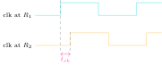

Definition
For a path from  (clock at ) to
(clock at ) to  (clock at ), skew ; jitter = maximum deviation of an edge from its ideal position. The constraints become
(clock at ), skew ; jitter = maximum deviation of an edge from its ideal position. The constraints become
- positive skew (capture clock later): more time for setup, less margin for hold — too much skew causes hold violations no clock frequency can fix;
- negative skew: the opposite;
- useful skew: skew introduced on purpose to borrow time from a short stage for a long one.
Clock distribution: H-trees and balanced buffer trees equalise wire lengths; FPGAs provide dedicated global clock networks with low skew.
Picture

and at different times, separated by  .
.Worked example
ns, ns, ns, ns, ns, jitter ns.
- Zero skew: ns, MHz; hold: ✓.
- Skew ns (capture later): ns (278 MHz) but hold needs ✗: a hold violation that no clock frequency can fix — add a 0.05 ns+ buffer on the short path.
Intuition
Skew moves the finish line of a race; jitter makes it wobble. You can plan around a line that is moved, but you must leave margin for one that wobbles.
Pitfall
Gated or derived clocks add skew through their logic; that is why clock gating uses dedicated cells and why generating clocks with ordinary logic is avoided.